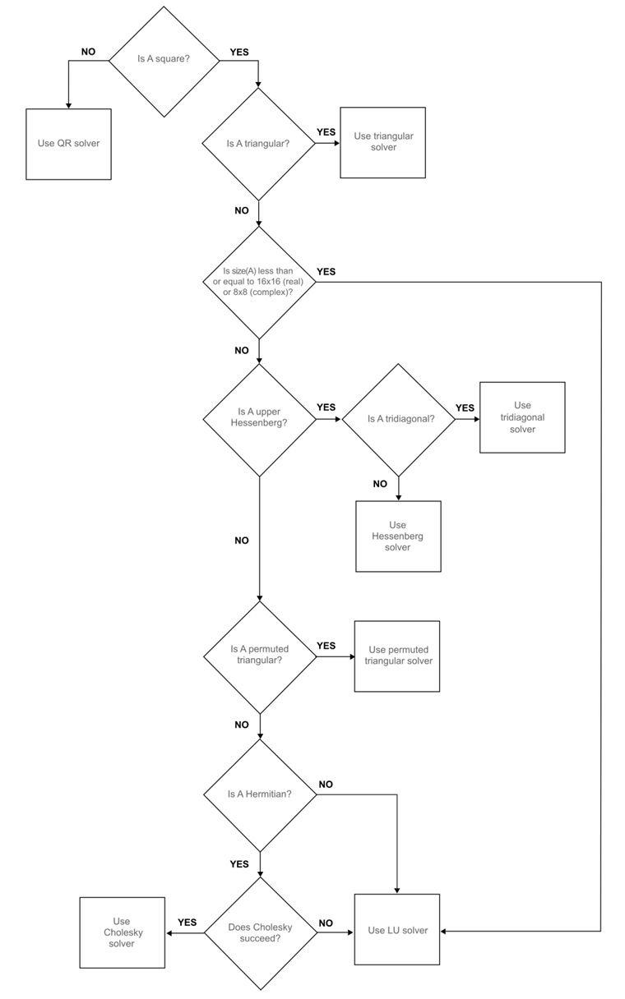
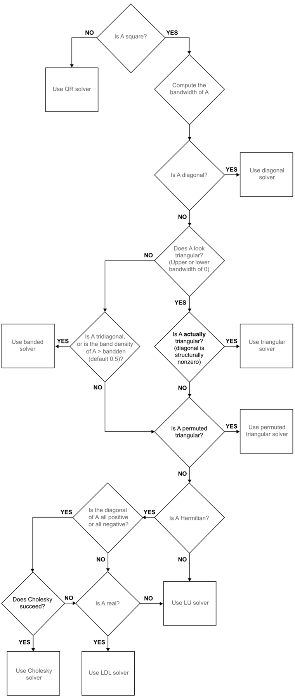

2 Solving Linear Systems of Equations
Before embarking on the main purpose of the course, which is solving differential equations, first solving linear systems will be necessary. The linear systems will take the form \[A\boldsymbol{x}=\boldsymbol{b} \quad \text{where} \quad A \in \mathbb{C}^{N \times N}, \boldsymbol{x} \in \mathbb{C}^N \quad \text{and} \quad \boldsymbol{b} \in \mathbb{C}^N.\] This is a situation when the LHS forms a system of equations with a vector of unknowns \(\boldsymbol{x}\) and the RHS is known.
There are two main ways in which this can be done, depending on the form of the matrix:
- Direct Methods:
- Direct substitution for diagonal systems;
- Forward substitution for lower triangular systems;
- Backward substitution for upper triangular systems;
- TDMA for tridiagonal systems;
- Cramer’s Rule and Gaussian Elimination for more general matrix systems.
- Iterative Methods
- Jacobi;
- Gauss-Seidel.
- In-built Methods:
- Backsklash operator.
2.1 Computational Stability of Linear Systems
Before tackling any linear algebra techniques, it is important to understand Computational Stability.
Consider the linear system \[A\boldsymbol{x}=\boldsymbol{b} \quad \text{where} \quad A \in \mathbb{C}^{N \times N}, \boldsymbol{x} \in \mathbb{C}^N \quad \text{and} \quad \boldsymbol{b} \in \mathbb{C}^N.\] In real-life applications, the matrix \(A\) is usually fully known and often invertible while the vector \(\boldsymbol{b}\) may not be known exactly and its measurement may often include rounding errors. Suppose that the vector \(\boldsymbol{b}\) has a small error \(\delta \boldsymbol{b}\), then the solution \(\boldsymbol{x}\) will also have a small error \(\delta \boldsymbol{x}\), meaning that the system will in fact be \[A (\boldsymbol{x} + \delta \boldsymbol{x}) = \boldsymbol{b} + \delta \boldsymbol{b}. \tag{2.1}\] Subtracting \(A\boldsymbol{x}=\boldsymbol{b}\) form Equation 2.1 gives \(A \delta \boldsymbol{x} = \delta \boldsymbol{b}\), therefore \(\delta \boldsymbol{x}=A^{-1} \delta \boldsymbol{b}\).
For \(p \in \mathbb{N}\), consider the ratio between the \(p\)-norm of the error \(\left\| \delta \boldsymbol{x} \right\|_{p}\) and the \(p\)-norm of the exact solution \(\left\| \boldsymbol{x} \right\|_{p}\): \[\begin{align*} \frac{\left\| \delta \boldsymbol{x} \right\|_{p}}{\left\| \boldsymbol{x} \right\|_{p}} & = \frac{ \left\| A^{-1} \delta \boldsymbol{b} \right\|_{p}}{\left\| \boldsymbol{x} \right\|_{p}} && \quad \text{since} \quad \delta \boldsymbol{x}=A^{-1} \delta \boldsymbol{b}\\ & \leq \frac{ \left\| A^{-1} \right\|_{p} \left\| \delta \boldsymbol{b} \right\|_{p}}{\left\| \boldsymbol{x} \right\|_{p}} && \quad \text{by the \emph{Submultiplicative Property}} \\ & = \frac{ \left\| A^{-1} \right\|_{p} \left\| \delta \boldsymbol{b} \right\|_{p}}{\left\| \boldsymbol{x} \right\|_{p}} \times \frac{\left\| A \right\|_{p}}{\left\| A \right\|_{p}} && \quad \text{multiplying by} \quad 1=\frac{\left\| A \right\|_{p}}{\left\| A \right\|_{p}} \\ & =\left\| A \right\|_{p} \left\| A^{-1} \right\|_{p} \frac{\left\| \delta \boldsymbol{b} \right\|_{p}}{\left\| A \right\|_{p} \left\| \boldsymbol{x} \right\|_{p}} && \quad \text{rearranging} \\ & \leq \left\| A \right\|_{p} \left\| A^{-1} \right\|_{p} \frac{\left\| \delta \boldsymbol{b} \right\|_{p}}{\left\| \boldsymbol{b} \right\|_{p}} && \quad \text{since} \; \; \boldsymbol{b}=A\boldsymbol{x} \; \text{then} \; \; \left\| \boldsymbol{b} \right\|_{p} \leq \left\| A \right\|_{p} \left\| \boldsymbol{x} \right\|_{p} \\ &&& \quad \text{by the Submultiplicative Property,} \\ &&& \quad \text{meaning that}\; \; \frac{1}{\left\| \boldsymbol{b} \right\|_{p}} \geq \frac{1}{\left\| A \right\|_{p} \left\| \boldsymbol{x} \right\|_{p}} \end{align*}\]
For matrices \(A\) and \(B\) and a vector \(\boldsymbol{x}\), \[\| A\boldsymbol{x} \| \leq \| A \| \| \boldsymbol{x} \|,\] \[\| AB \| \leq \|A\| \|B\|.\] In both cases, the equality holds when either \(A\) or \(B\) are orthogonal.
Let \(\kappa_p(A)=\left\| A^{-1} \right\|_{p} \left\| A \right\|_{p}\), then \[\frac{\left\| \delta \boldsymbol{x} \right\|_{p}}{\left\| \boldsymbol{x} \right\|_{p} } \leq \kappa_p(A) \frac{\left\| \delta \boldsymbol{b} \right\|_{p}}{\left\| \boldsymbol{b} \right\|_{p}}\]
The quantity \(\kappa_p(A)\) is called the Condition Number1 and it can be regarded as a measure of how sensitive a matrix is to perturbations, in other words, it gives an indication as to the stability of the matrix system. A problem is Well-Conditioned if the condition number is small, and is Ill-Conditioned if the condition number is large (the terms “small” and “large” are somewhat subjective here and will depend on the context). Bear in mind that in practice, calculating the condition number may be computationally expensive since it requires inverting the matrix \(A\).
The condition number derived above follows the assumption that the error only occurs in \(\boldsymbol{b}\) which then results in an error in \(\boldsymbol{x}\). If an error \(\delta A\) is also committed in \(A\), then for sufficiently small \(\delta A\), the error bound for the ratio is \[\frac{\left\| \delta \boldsymbol{x} \right\|_{p}}{\left\| \boldsymbol{x} \right\|_{p}} \leq \frac{\kappa_p(A)}{ 1 - \kappa_p(A) \frac{\left\| \delta A \right\|_{p}}{\left\| A \right\|_{p}}} \left( \frac{\left\| \delta \boldsymbol{b} \right\|_{p}}{\left\| \boldsymbol{b} \right\|_{p}} + \frac{\left\| \delta A \right\|_{p}}{\left\| A \right\|_{p}} \right).\]
An example for which \(A\) is large is a discretisation matrix of a PDE, in this case, the condition number of \(A\) can be very large and increases rapidly as the number of mesh points increases. For example, for a PDE with \(N\) mesh points in 2-dimensions, the condition number \(\kappa_2(A)\) is of order \(\mathcal{O}\left(N\right)\) and it is not uncommon to have \(N\) between \(10^6\) and \(10^8\). In this case, errors in \(\boldsymbol{b}\) may be amplified enormously in the solution process. Thus, if \(\kappa_p(A)\) is large, there may be difficulties in solving the system reliably, a problem which plagues calculations with partial differential equations.
Moreover, if \(A\) is large, then the system \(A\boldsymbol{x}= \boldsymbol{b}\) may be solved using an iterative method which generate a sequence of approximations \(\boldsymbol{x}_n\) to \(\boldsymbol{x}\) while ensuring that each iteration is easy to perform and that \(\boldsymbol{x}_n\) rapidly tends to \(\boldsymbol{x}\), within a certain tolerance, as \(n\) tends to infinity. If \(\kappa_p(A)\) is large, then the number of iterations to reach this tolerance increases rapidly as the size of \(A\) increases, often being proportional to \(\kappa_p(A)\) or even to \(\kappa_p(A)^2\). Thus not only do errors in \(\boldsymbol{x}\) accumulate for large \(\kappa_p(A)\), but the number of computation required to find \(\boldsymbol{x}\) increases as well.
In MATLAB, the condition number can be calculated using the cond(A,p) command where A is the square matrix in question and p is the chosen norm which can only be equal to 1, 2, inf or 'Fro' (when using the Frobenius norm). Also note that cond(A) without the second argument p produces the condition number with the 2-norm by default.
Properties of the Condition Number
Let \(A\) and \(B\) be invertible matrices, \(p \in \mathbb{N}\) and \(\lambda \in \mathbb{R}\). The condition number \(\kappa_p\) has the following properties:
- \(\kappa_p(A) \geq 1\);
- \(\kappa_p(A)=1\) if and only if \(A\) is an orthogonal matrix, i.e. \(A^{-1}=A^{\mathrm{T}}\);
- \(\kappa_p({A}^{\mathrm{T}})=\kappa_p(A^{-1})=\kappa_p(A)\);
- \(\kappa_p(\lambda A)=\kappa_p(A)\);
- \(\kappa_p(AB) \leq \kappa_p(A)\kappa_p(B)\).
2.2 Direct Methods
Direct methods can be used to solve matrix systems in a finite number of steps, although these steps could possibly be computationally expensive.
2.2.1 Direct Substitution
Direct substitution is the simplest direct method and requires the matrix \(A\) to be a diagonal with none of the diagonal terms being 0 (otherwise the matrix will not be invertible).
Consider the matrix system \(A \boldsymbol{x}=\boldsymbol{b}\) where \[A=\begin{pmatrix} a_1 \\ & a_2 \\ && \ddots \\ &&& a_{N-1} \\ &&&& a_{N} \end{pmatrix}, \quad \boldsymbol{x}=\begin{pmatrix} x_1 \\ x_2 \\ \vdots \\ x_{N-1} \\ x_N \end{pmatrix} \quad \text{and} \quad \boldsymbol{b}=\begin{pmatrix} b_1 \\ b_2 \\ \vdots \\ b_{N-1} \\ b_N \end{pmatrix}\] and \(a_1, a_2, \dots, a_N \neq 0\). Direct substitution involves simple multiplication and division: \[A\boldsymbol{x}=\boldsymbol{b} \quad \implies \quad\begin{pmatrix} a_1 \\ & a_2 \\ && \ddots \\ &&& a_{N-1} \\ &&&& a_N \end{pmatrix}\begin{pmatrix} x_1 \\ x_2 \\ \vdots \\ x_{N-1} \\ x_{N} \end{pmatrix}=\begin{pmatrix} b_1 \\ b_2 \\ \vdots \\ b_{N-1} \\ b_N \end{pmatrix}\] \[\implies \quad\begin{matrix} a_1 x_1 = b_1 \\ a_2 x_2 = b_2 \\ \vdots \\ a_{N-1}x_{N-1}=b_{N-1} \\ a_N x_N=b_N \end{matrix} \quad \implies \quad\begin{matrix} x_1=\frac{b_1}{a_1} \\ x_2=\frac{b_2}{a_2} \\ \vdots \\ x_{N-1}=\frac{b_{N-1}}{a_{N-1}} \\ x_N=\frac{b_N}{a_N}. \end{matrix}\]
The solution can be written explicitly as \(x_n=\frac{b_n}{a_n}\) for all \(n=1,2,\dots,N\). Every step can done independently, meaning that direct substitution lends itself well to parallel computing. In total, direct substitution requires exactly \(N\) computations (all being division).
2.2.2 Forward/Backward Substitution
Forward/backward substitution require that the matrix \(A\) be lower/upper triangular.
Consider the matrix system \(A \boldsymbol{x}=\boldsymbol{b}\) where \[A=\begin{pmatrix} a_{11} & a_{12} & \dots & a_{1,N-1} & a_{1N} \\ & a_{22} & \dots & a_{2,N-1} & a_{2N} \\ && \ddots & \vdots \\ &&& a_{N-1,N-1} & a_{N-1,N} \\ &&&& a_{NN} \end{pmatrix},\] \[\boldsymbol{x}=\begin{pmatrix} x_1 \\ x_2 \\ \vdots \\ x_{N-1} \\ x_N \end{pmatrix} \quad \text{and} \quad \boldsymbol{b}=\begin{pmatrix} b_1 \\ b_2 \\ \vdots \\ b_{N-1} \\ b_N \end{pmatrix}\] and \(a_{11}, a_{22}, \dots, a_{NN} \neq 0\) (so that the determinant is non-zero). The matrix \(A\) is upper triangular in this case and will require backwards substitution: \[A\boldsymbol{x}=\boldsymbol{b} \quad \implies \quad\begin{pmatrix} a_{11} & a_{12} & \dots & a_{1,N-1} & a_{1N} \\ & a_{22} & \dots & a_{2,N-1} & a_{2N} \\ && \ddots & \vdots \\ &&& a_{N-1,N-1} & a_{N-1,N} \\ &&&& a_{NN} \end{pmatrix}\begin{pmatrix} x_1 \\ x_2 \\ \vdots \\ x_{N-1} \\ x_N \end{pmatrix}=\begin{pmatrix} b_1 \\ b_2 \\ \vdots \\ b_{N-1} \\ b_N. \end{pmatrix}\]
\[\implies \quad\begin{matrix} a_{11}x_1 &+& a_{12}x_2 &+& \dots &+& a_{1,N-1} x_{N-1} &+& a_{1N}x_N &= b_1 \\ & & a_{22}x_2 &+& \dots &+& a_{2,N-1} x_{N-1} &+& a_{2N}x_N &= b_2 \\ & & & & \vdots & & & & & \\ & & & & & & a_{N-1,N-1} x_{N-1} &+& a_{N-1,N}x_N &= b_{N-1} \\ & & & & & & & & a_{NN}x_N &= b_N \end{matrix}\]
Backward substitution involves using the solutions from the later equations to solve the earlier ones, this gives: \[x_N=\frac{b_N}{a_{NN}}\] \[x_{N-1}=\frac{b_{N-1}-a_{N-1,N}x_N}{a_{N-1,N-1}}\] \[\vdots\] \[x_2=\frac{b_2-a_{2N}x_N-a_{2,N-1}x_{N-1}-\dots-a_{23}x_3}{a_{22}}\] \[x_1=\frac{b_1-a_{1N}x_N-a_{1,N-1}x_{N-1}-\dots-a_{12}x_2}{a_{11}}.\]
This can be written more explicitly as: \[x_n=\begin{cases} \frac{b_N}{a_{NN}} & \quad \text{for} \quad n=N \\ \frac{1}{a_{nn}}\left( b_n - \sum_{i=n+1}^{N}{a_{ni}x_i} \right) & \quad \text{for} \quad n=N-1, \dots, 2, 1. \end{cases}\] A similar version can be obtained for the forward substitution for lower triangular matrices as follows: \[x_n=\begin{cases} \frac{b_1}{a_{11}} & \quad \text{for} \quad n=1 \\ \frac{1}{a_{nn}}\left( b_n - \sum_{i=1}^{n-1}{a_{ni}x_i} \right) & \quad \text{for} \quad n= 2, 3, \dots, N-1. \end{cases}\]
For any \(n=1,2,\dots,N-1\), calculating it requires 1 division, \(N-n\) multiplications and \(N-n\) subtractions. Therefore cumulatively, \(x_1, x_2, \dots, x_{N-1}\) require \(N\) divisions, \(\frac{1}{2}\left( N^2-N \right)\) multiplications and \(\frac{1}{2}\left( N^2-N \right)\) additions with one more division required for \(x_N\), meaning that in total, backward (and forward) substitution requires \(N^2+1\) computations.
2.2.3 TDMA Algorithm
The TriDiagonal Matrix Algorithm, abbreviated as TDMA (also called the Thomas Algorithm) was developed by Llewellyn Thomas which solves tridiagonal matrix systems.
Consider the matrix system \(A \boldsymbol{x}=\boldsymbol{b}\) where \[A=\begin{pmatrix} m_1 & r_1 \\ l_2 & m_2 & r_2 \\ & \ddots & \ddots & \ddots \\ && l_{N-1} & m_{N-1} & r_{N-1} \\ &&& l_N & m_N \end{pmatrix},\] \[\boldsymbol{x}=\begin{pmatrix} x_1 \\ x_2 \\ \vdots \\ x_{N-1} \\ x_N \end{pmatrix} \quad \text{and} \quad \boldsymbol{b}=\begin{pmatrix} b_1 \\ b_2 \\ \vdots \\ b_{N-1} \\ b_N \end{pmatrix}.\] The \(m\) terms denote the diagonal elements, \(l\) denote subdiagonal elements (left of the diagonal terms) and \(r\) denote the superdiagonal elements (right of the diagonal terms). The TDMA algorithm works in two steps: first, TDMA performs a forward sweep to eliminate all the subdiagonal terms and rescale the matrix to have 1 as the diagonal (the same can also be done to eliminate the superdiagonal instead). This give the matrix system \[\begin{pmatrix} 1 & R_1 \\ & 1 & R_2 \\ & & \ddots & \ddots \\ && & 1 & R_{N-1} \\ &&& & 1 \end{pmatrix}\begin{pmatrix} x_1 \\ x_2 \\ \vdots \\ x_{N-1} \\ x_N \end{pmatrix}=\begin{pmatrix} B_1 \\ B_2 \\ \vdots \\ B_{N-1} \\ B_N \end{pmatrix}\] where \[R_n= \begin{cases} \frac{r_1}{m_1} & n=1 \\ \frac{r_n}{m_n-l_n R_{n-1}} & n=2,3,\dots,N-1 \end{cases}\] \[B_n= \begin{cases} \frac{b_1}{m_1} & n=1 \\ \frac{b_n-l_n B_{n-1}}{m_n - l_n R_{n-1}} & n=2,3,\dots,N. \end{cases}\]
This can now be solved with backward substitution: \[x_n= \begin{cases} B_N & n=N \\ B_n-R_n x_{n+1} & n=N-1, N-2, \dots, 2, 1. \end{cases}\]
The computational complexity can be calculated as follows:
| Term | \(\times\) | \(+\) | \(\div\) |
|---|---|---|---|
| \(R_1\) | 0 | 0 | 1 |
| \(R_2\) | 1 | 1 | 1 |
| \(\vdots\) | \(\vdots\) | \(\vdots\) | \(\vdots\) |
| \(R_{N-1}\) | 1 | 1 | 1 |
| \(B_1\) | 0 | 0 | 1 |
| \(B_2\) | 2 | 2 | 1 |
| \(\vdots\) | \(\vdots\) | \(\vdots\) | \(\vdots\) |
| \(B_{N-1}\) | 2 | 2 | 1 |
| \(B_N\) | 2 | 2 | 1 |
| \(x_1\) | 1 | 1 | 0 |
| \(x_2\) | 1 | 1 | 0 |
| \(\vdots\) | \(\vdots\) | \(\vdots\) | \(\vdots\) |
| \(x_{N-1}\) | 1 | 1 | 0 |
This gives a total of \(3N-5\) computations for \(R\), \(5N-4\) computations for \(B\) and \(2N-2\) computations for \(x\) giving a total of \(10N-11\) computations.
There are similar ways of performing eliminations that be done for pentadiagonal systems as well as tridiagonal systems with a full first row.
2.2.4 Cramer’s Rule
Cramer’s Rule is a method that can be used to solve any system \(A\boldsymbol{x}=\boldsymbol{b}\) (of course provided that \(A\) is non-singular).
Cramer’s rule states that the elements of the vector \(\boldsymbol{x}\) are given by \[x_n = \frac{\text{det}(A_n)}{\text{det}(A)} \quad \text{for all} \quad n = 1,2,\dots,N\] where \(A_n\) is the matrix obtained from \(A\) by replacing the \({n}^{\mathrm{th}}\) column by \(\boldsymbol{b}\). This method seems very simple to execute thanks to its very simple formula, but in practice, it can be very computationally expensive.
Generally, for a matrix of size \(N \times N\), the determinant will require \(\mathcal{O}\left(N!\right)\) computations (other matrix forms or methods may require fewer, of \(\mathcal{O}\left(N^3\right)\) at least). Cramer’s rule requires calculating the determinants of \(N+1\) matrices each is size \(N \times N\) and performing \(N\) divisions, therefore the computational complexity of Cramer’s rule is \(\mathcal{O}\left(N+(N+1) \times N!\right)=\mathcal{O}\left(N+(N+1)!\right)\). This means that if a machine runs at 1 Gigaflops per second (\(10^9\) flops), then a matrix system of size \(20 \times 20\) will require 1620 years to compute.
2.2.5 Other Direct Methods
There are many other direct methods with more involved calculations like Gaussian Elimination, LU factorisation, QR decomposition, Singular Value Decomposition amongst others. All these methods will be placed in the appendix.
2.3 Iterative Methods
For a large matrix \(A\), solving the system \(A\boldsymbol{x} = \boldsymbol{b}\) directly can be computationally restrictive as seen in the different methods shown in Section 2.2. An alternative would be to use iterative methods which generate a sequence of approximations \(\boldsymbol{x}^{(k)}\) to the exact solution \(\boldsymbol{x}\). The hope is that the iterative method converges to the exact solution, i.e. \[\lim_{k \to \infty}\boldsymbol{x}^{(k)}=\boldsymbol{x}.\]
A possible strategy to realise this process is to consider the following recursive definition \[\boldsymbol{x}^{(k)} = B\boldsymbol{x}^{(k-1)}+\boldsymbol{g} \quad \text{for} \quad k\geq 1,\] where \(B\) is a suitable matrix called the Iteration Matrix (which would generally depend on \(A\)) and \(\boldsymbol{g}\) is a suitable vector (depending on \(A\) and \(\boldsymbol{b}\)). Since the iterations \(\boldsymbol{x}^{(k)}\) must tend to \(\boldsymbol{x}\) as \(k\) tends to infinity, then \[\boldsymbol{x}^{(k)} = B\boldsymbol{x}^{(k-1)}+\boldsymbol{g} \tag{2.2}\] \[\quad \underset{k \to \infty}{\Rightarrow} \quad \boldsymbol{x}=B\boldsymbol{x}+\boldsymbol{g}. \tag{2.3}\]
Next, a sufficient condition needs to be derived; define \(\boldsymbol{e}^{(k)}\) as the error incurred from iteration \(k\), i.e. \(\boldsymbol{e}^{(k)} := \boldsymbol{x} - \boldsymbol{x}^{(k)}\) and consider the linear systems \[\boldsymbol{x} = B\boldsymbol{x}+\boldsymbol{g} \quad \text{and} \quad \boldsymbol{x}^{(k)} = B\boldsymbol{x}^{(k-1)}+\boldsymbol{g}.\] Subtracting these gives \[\begin{align*} & \quad \boldsymbol{x}-\boldsymbol{x}^{(k)} = \left( B\boldsymbol{x}+\boldsymbol{g} \right)-\left( B\boldsymbol{x}^{(k-1)}+\boldsymbol{g} \right) \\ \implies & \quad \boldsymbol{x}-\boldsymbol{x}^{(k)} = B\left( \boldsymbol{x}-\boldsymbol{x}^{(k-1)} \right) \\ \implies & \quad \boldsymbol{e}^{(k)}=B\boldsymbol{e}^{(k-1)}. \end{align*}\]
In order to find a bound for the error, take the 2-norm of the error equation \[\boldsymbol{e}^{(k)}=B\boldsymbol{e}^{(k-1)} \quad \underset{\left\| \cdot \right\|_{2}}{\Rightarrow} \quad \|\boldsymbol{e}^{(k)}\|_2 = \|B\boldsymbol{e}^{(k-1)}\|_2.\] By the submultiplicative property of matrix norms given in Note 2.1, the error \(\| \boldsymbol{e}^{(k)} \|\) can be bounded above as \[\left\| \boldsymbol{e}^{(k)} \right\|_{2} = \left\| B\boldsymbol{e}^{(k-1)} \right\|_{2} \leq \left\| B \right\|_{2} \left\| \boldsymbol{e}^{(k-1)} \right\|_{2}.\] This can be iterated backwards, so for \(k \geq 1\), \[\|\boldsymbol{e}^{(k)}\|_2 \leq \| B \|_2 \|\boldsymbol{e}^{(k-1)}\|_2 \leq \| B \|_2^2 \|\boldsymbol{e}^{(k-2)}\|_2 \leq \dots \leq \| B \|_2^{k} \|\boldsymbol{e}^{(0)}\|_2.\] Generally, this means that the error at any iteration \(k\) can be bounded above by the error at the initial iteration \(\boldsymbol{e}^{(0)}\). Therefore, since \(\boldsymbol{e}^{(0)}\) is arbitrary, if \(\| B \|_2<1\) then the set of vectors \(\left\{ \boldsymbol{x}^{(k)} \right\}_{k \in \mathbb{N}}\) generated by the iterative scheme \(\boldsymbol{x}^{(k)}=B\boldsymbol{x}^{(k-1)}+\boldsymbol{g}\) will converge to the exact solution \(\boldsymbol{x}\) which solves \(A\boldsymbol{x}=\boldsymbol{b}\), hence giving a sufficient condition for convergence.
2.3.1 Constructing an Iterative Method
A general technique to devise an iterative method to solve \(A \boldsymbol{x}=\boldsymbol{b}\) is based on a “splitting” of the matrix \(A\). First, write the matrix \(A\) as \(A = P-(P-A)\) where \(P\) is a suitable non-singular matrix (somehow linked to \(A\) and “easy” to invert). Then \[\begin{align*} P\boldsymbol{x} & =\left[ A+(P-A) \right]\boldsymbol{x} && \quad \text{since $P=A+P-A$}\\ & =(P-A)\boldsymbol{x}+A\boldsymbol{x} && \quad \text{expanding} \\ & =(P-A)\boldsymbol{x}+\boldsymbol{b} && \quad \text{since $A\boldsymbol{x}=\boldsymbol{b}$} \end{align*}\]
Therefore, the vector \(\boldsymbol{x}\) can be written implicitly as \[\boldsymbol{x}=P^{-1}(P-A)\boldsymbol{x}+P^{-1}\boldsymbol{b}\] which is of the form given in Equation 2.3 where \(B=P^{-1}(P-A)=I-P^{-1}A\) and \(\boldsymbol{g}=P^{-1}\boldsymbol{b}\). It would then stand to reason that if the iterative procedure was of the form \[\boldsymbol{x}^{(k)}=P^{-1}(P-A)\boldsymbol{x}^{(k-1)}+P^{-1}\boldsymbol{b}\] (as in Equation 2.2), then the method should converge to the exact solution (provided a suitable choice for \(P\)). Of course, for the iterative procedure, the iteration needs an initial vector to start which will be \[\boldsymbol{x}^{(0)}=\begin{pmatrix} x_1^{(0)} \\ x_2^{(0)} \\ \vdots \\ x_N^{(0)} \end{pmatrix}.\]
The choice of the matrix \(P\) should depend on \(A\) in some way. So suppose that the matrix \(A\) is broken down into three parts, \(A=D+L+U\) where \(D\) is the matrix of the diagonal entries of \(A\), \(L\) is the strictly lower triangular part or \(A\) (i.e. not including the diagonal) and \(U\) is the strictly upper triangular part of \(A\).
For example \[\underbrace{\begin{pmatrix} a & b & c \\ d & e & f \\ g & h & i \end{pmatrix}}_{A}=\underbrace{\begin{pmatrix} a & 0 & 0 \\ 0 & e & 0 \\ 0 & 0 & i \end{pmatrix}}_{D}+\underbrace{\begin{pmatrix} 0 & 0 & 0 \\ d & 0 & 0 \\ g & h & 0 \end{pmatrix}}_{L}+\underbrace{\begin{pmatrix} 0 & b & c \\ 0 & 0 & f \\ 0 & 0 & 0 \end{pmatrix}}_{U}.\]
- Jacobi Method: \(\boldsymbol{P=D}\)
The matrix \(P\) is chosen to be equal to the diagonal part of \(A\), then the splitting procedure gives the iteration matrix \(B=I-D^{-1}A\) and the iteration itself is \(\boldsymbol{x}^{(k)} = B\boldsymbol{x}^{(k-1)}+D^{-1}\boldsymbol{b}\) for \(k \geq 0\), which can be written component-wise as \[x_i^{(k)}=\frac{1}{a_{ii}}\left(b_i-\sum_{\substack{j=1 \\ j\neq i}}^{N}a_{ij}x_j^{(k-1)}\right) \quad \text{for all} \quad i=1,\dots,N. \tag{2.4}\]
If \(A\) is strictly diagonally dominant by rows2, then the Jacobi method converges. Note that each component \(x_i^{(k)}\) of the new vector \(\boldsymbol{x}^{(k)}\) is computed independently of the others, meaning that the update is simultaneous which makes this method suitable for parallel programming.
- Gauss-Seidel Method: \(\boldsymbol{P=D+L}\)
The matrix \(P\) is chosen to be equal to the lower triangular part of \(A\), therefore the iteration matrix is given by \(B = (D + L)^{-1}(D + L - A)\) and the iteration itself is \(\boldsymbol{x}^{(k+1)}=B\boldsymbol{x}^{(k)}+(D+L)^{-1}\boldsymbol{b}\) which can be written component-wise as \[x_i^{(k+1)}=\frac{1}{a_{ii}}\left(b_i-\sum_{j=1}^{i-1}a_{ij}x_j^{(k+1)}-\sum_{j=i+1}^{N}a_{ij}x_j^{(k)}\right) \quad \text{for all} \quad i=1,\dots,N. \tag{2.5}\]
Contrary to Jacobi method, Gauss-Seidel method updates the components in sequential mode.
There are many other methods that use splitting like:
- Damped Jacobi method: \(P=\frac{1}{\omega}D\) for some \(\omega \neq 0\)
- Successive over-relaxation method: \(P=\frac{1}{\omega}D+L\) for some \(\omega \neq 0\)
- Symmetric successive over-relaxation method: \(P=\frac{1}{\omega(2-\omega)}(D+\omega L) D^{-1} (D+\omega U)\) for some \(\omega \neq 0,2.\)
2.3.2 Computational Cost & Stopping Criteria
There are essentially two factors contributing to the effectiveness of an iterative method for \(A\boldsymbol{x}=\boldsymbol{b}\): the computational cost per iteration and the number of performed iterations. The computational cost per iteration depends on the structure and sparsity of the original matrix \(A\) and on the choice of the splitting. For both Jacobi and Gauss-Seidel methods, without further assumptions on \(A\), the computational cost per iteration is \(\mathcal{O}\left(N^2\right)\). Iterations should be stopped when one or more stopping criteria are satisfied, as will be discussed below. For both Jacobi and Gauss-Seidel methods, the cost of performing \(k\) iterations is \(\mathcal{O}\left(kN^2\right)\); so as long as \(k \ll N\), these methods are much cheaper than Gaussian elimination.
In theory, iterative methods require an infinite number of iterations to converge to the exact solution of a linear system but in practice, aiming for the exact solution is neither reasonable nor necessary. Indeed, what is actually needed is an approximation \(\boldsymbol{x}^{(k)}\) for which the error is guaranteed to be lower than a desired tolerance \(\tau>0\). On the other hand, since the error is itself unknown (as it depends on the exact solution), a suitable a posteriori error estimator is needed which predicts the error starting from quantities that have already been computed. There are two natural estimators one may consider:
- Residual: The residual error at the \({k}^{\mathrm{th}}\) iteration, denoted \(\boldsymbol{r}^{(k)}\) is given by the error between \(A\boldsymbol{x}^{(k)}\) and \(\boldsymbol{b}\), namely \(\boldsymbol{r}^{(k)}=\boldsymbol{b}-A\boldsymbol{x}^{(k)}\). An iterative method can be stopped at the first iteration step \(k=k_{\min}\) for which \[\|\boldsymbol{r}^{(k)}\|\leq\tau \|\boldsymbol{b}\|.\]
- Increment: The incremental error at the \(k^{\mathrm{th}}\) iteration, denoted \(\boldsymbol{\delta}^{(k)}\) is the error between consecutive approximations, namely \(\boldsymbol{\delta}^{(k)}=\boldsymbol{x}^{(k)}-\boldsymbol{x}^{(k-1)}\). An iterative method can be stopped after the first iteration step \(k=k_{\min}\) for which \[\|\boldsymbol{\delta}^{(k)}\|\leq\tau.\]
Of course, another way to stop the iteration is by imposing a maximum number of allowable iterations \(K\), this is usually a good starting point since it is not possible to know beforehand if the method does indeed converge. Enforcing a maximum number of iterations will determine if the initial guess is suitable, if the method is suitable or indeed if there is any convergence.
2.4 In-Built MATLAB Procedures
Given that MATLAB is well-suited to dealing with matrices, it has a very powerful method of solving linear systems and it is using the Backslash Operator. This is a powerful in-built method that can solve any square linear system regardless of its form. MATLAB does this by first determining the general form of the matrix (sparse, triangular, Hermitian, etc.) before applying the appropriate optimised method.
For the linear system \[A \boldsymbol{x} = \boldsymbol{b} \quad \text{where} \quad A \in \mathbb{R}^{N \times N}, \quad \boldsymbol{x} \in \mathbb{R}^N, \quad \boldsymbol{b} \in \mathbb{R}^N\] MATLAB can solve this using the syntax x=A\b.
The MATLAB website shows the following flowcharts for how A\b classifies the problem before solving it.


2.5 Exersises
Note that \(A^{-1}\) exists only if \(A\) is non-singular, meaning that the condition number number only exists if \(A\) is non-singular.↩︎
A matrix \(A \in \mathbb{R}^{N \times N}\) is Diagonally Dominant if every diagonal entry is larger in absolute value than the sum of the absolute value of all the other terms in that row. More formally \[|a_{ii}|\geq \sum_{\substack{j=1 \\ j\neq i}}^{N}|a_{ij}| \quad \text{for all} \quad i=1,\dots,N.\] The matrix is Strictly Diagonally Dominant if the inequality is strict.↩︎